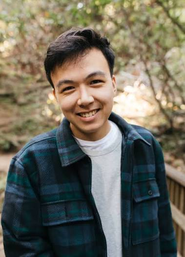
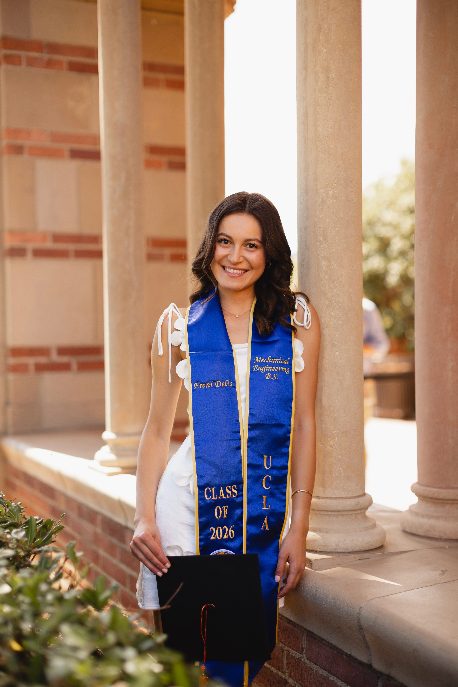
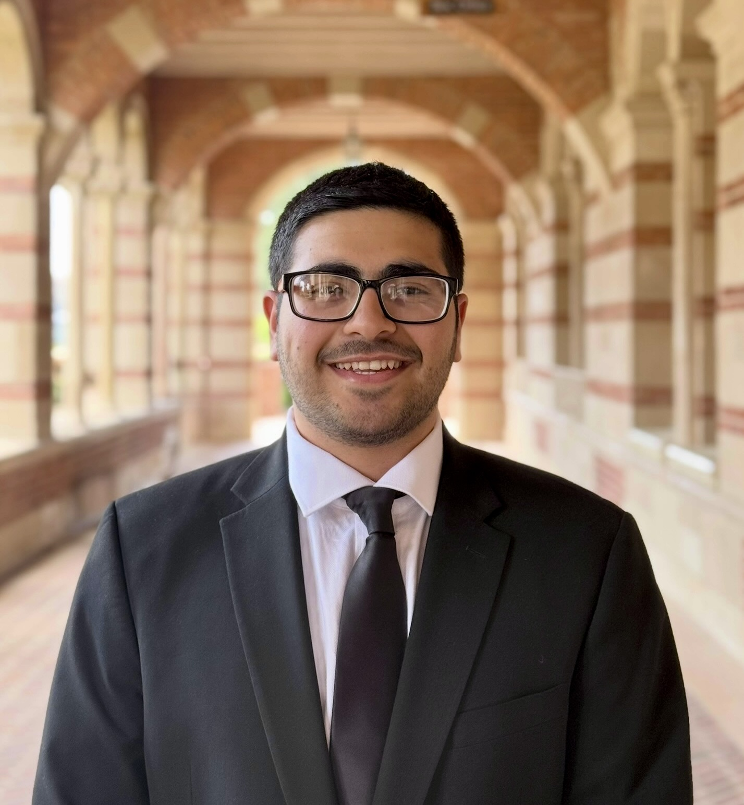

Our Team
Three friends who met as tutors at UCLA and kept teaching.
We met at the Tau Beta Pi tutoring center at UCLA, where we were all tutors. Since then, we’ve helped hundreds of students work toward their academic goals. We bring experience from engineering, research, teaching, and graduate admissions to every session.
Meet the Team

Jack Burd
Jack Burd earned a degree in electrical engineering from UCLA and is pursuing a Ph.D. in Electrical Engineering and Computer Sciences at UC Berkeley, where he also serves as a head teaching assistant. He spent three years as a tutoring officer with UCLA’s Tau Beta Pi program. Jack connects classroom concepts to real engineering work, including his research on brain-computer interfaces, so students can see how the ideas they learn are used in emerging technologies.

Ereni Delis
Ereni Delis earned her B.S. in Mechanical Engineering from UCLA and is pursuing doctoral study at Stanford. She received the National Science Foundation Graduate Research Fellowship and UCLA Samueli’s schoolwide Outstanding Bachelor of Science award for the Class of 2026. During three years of tutoring with UCLA’s Tau Beta Pi program, she also led the tutoring team. Ereni enjoys helping students build confidence in engineering, math, and physical science by connecting fundamentals to practical problems.

Mahan Pourfakhr
Mahan Pourfakhr is a medical student at UCSF with B.S. and M.S. degrees in Bioengineering from UCLA. He has six years of experience tutoring and mentoring students in math, chemistry, physics, biology, engineering, and undergraduate and graduate admissions. His experience includes the Los Angeles Pierce College Center for Academic Success and the UCLA Engineering Transfer Center, where he also mentored students through the application process. Mahan has served as Tutoring Officer for UCLA Tau Beta Pi and as a teaching assistant for Organic Chemistry and Bioengineering courses. He works with students building confidence in foundational material as well as those aiming to excel in advanced coursework.